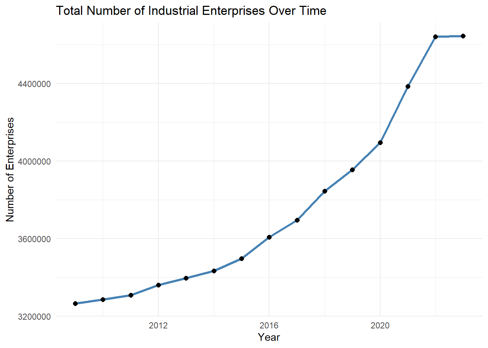
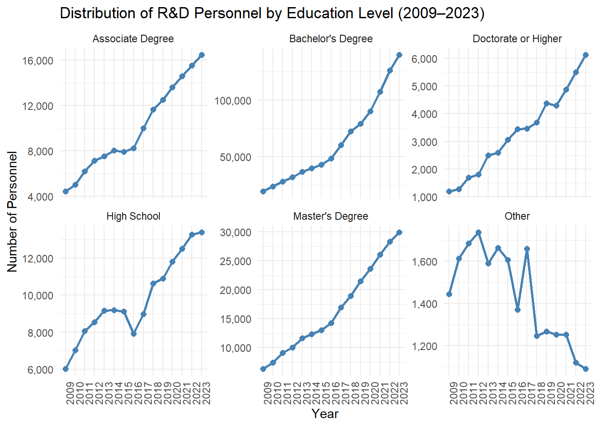
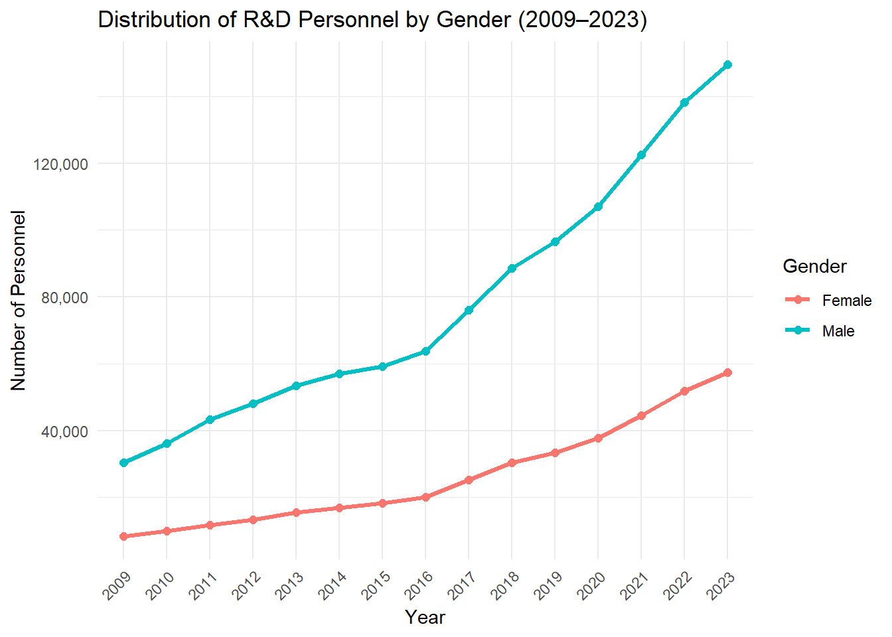

An Evolutionary Analysis of Industrial Entrepreneurship and R&D Resources in Turkiye
Burcu ALTUNOĞLU - Mustafa Erdem BAKIR
1. Project Overview and Scope
Problem Definition
The growth of entrepreneurial activities in the industrial sector is a dynamic factor that influences not only economic development but also scientific productivity and technological capacity. Evaluating how changes in the number of industrial enterprises affect the composition and size of the R&D workforce is of strategic importance for understanding the development of innovation capacity.
In this context, the primary research question of the project is defined as follows:
What is the impact of changes in the number of industrial enterprises in Turkiye on the educational level and gender distribution of R&D personnel between 2009 and 2022?
In addressing this question, the analysis will not only consider the total number of R&D personnel, but also account for variations in their educational attainment and gender composition.
Research Objectives
The primary objectives of this study are as follows:
To conduct a comparative analysis of the evolution of the number of industrial enterprises in Turkiye with the educational and gender composition of the R&D workforce over time,
To identify statistically significant and structural relationships among these variables,
To estimate the effects of entrepreneurial activities on the composition of the R&D workforce through a multiple linear regression model,
To develop policy recommendations for Turkiye’s science and technology agenda and industrial strategies based on the findings.
2. Data
The datasets used in this study consist of comprehensive, large-scale statistical data published annually by the TÜİK, the official statistical agency of Turkiye. Both datasets provide sufficient numerical scope for analysis and allow for meaningful comparisons across both temporal and spatial dimensions.
2.1 Data Source
TÜİK Official Data Portal: https://data.tuik.gov.tr/
The raw data analyzed in this project were obtained from files downloaded from the TURKSTAT data portal, provided in .xlsx format. The relevant files will be included as source materials on the project’s GitHub page.
2.2 General Information About Data
Industrial Total Enterprise Count Data
This dataset contains annual figures on the total number of industrial enterprises operating at both national and provincial levels across Turkiye. Available since 2009, it provides a quantitative foundation for monitoring the dynamics of entrepreneurship in the industrial sector.
R&D Activities Data of Industrial and Service Enterprises
The R&D dataset comprises annual statistics on research and development (R&D) activities conducted by industrial and service enterprises in Turkiye. Regularly published since 2003, the dataset reports the total number of R&D personnel nationwide and classifies this workforce by educational attainment (e.g., doctorate, master’s, bachelor’s degrees) and employment status. As such, it offers rich content in terms of both quantitative magnitude and qualitative detail.
When considered together, these two datasets enable a relational analysis of entrepreneurial capacity and scientific human capital in Turkiye. Their time-series structure also makes them suitable for modeling and forecasting applications. In particular, the national-level coverage of R&D personnel data, combined with the availability of industrial enterprise counts at both the national and provincial levels, ensures a high degree of representativeness for national-level analysis.
2.3 Reason of Choice
Both datasets have been obtained from up-to-date, publicly available, and reliable sources provided by the TÜİK. The fact that these datasets are published within the context of Turkiye allows this study to contribute as a decision-support tool for policy-making at the national level. Moreover, their time-series structure enables multidimensional statistical analyses.
In this regard, the selected datasets are well-suited for generating analytical insights within the scope of industrial engineering, particularly in the areas of decision support systems, resource allocation optimization, technology management, and sustainable development.
2.4 Preprocessing
The two main datasets used in this project were obtained from the official portal of the TÜİK in .xlsx format. These datasets are published annually at the national level and cover the number of industrial enterprises as well as the qualitative and demographic characteristics of R&D personnel. Although the data are structured, several preprocessing steps are required to make them ready for analysis.
The data import and preprocessing workflow will follow these systematic steps:
Data Import
The data files will be imported into the R environment using packages such as readxl, dplyr, and tidyr. During this process, the original data structure will be preserved while transforming the datasets into a format that is both reorganizable and suitable for analysis.
Variable Selection and Disaggregation
Industrial Enterprise Data:
This dataset presents the annual number of industrial enterprises across Turkiye’s 81 provinces. For the purposes of this project, only the total number of industrial enterprises at the national level will be used. This choice ensures analytical consistency, as the R&D dataset is also provided at the national level.
R&D Personnel Data (by Educational Level):
The number of R&D personnel is disaggregated by educational attainment (e.g., Doctorate or higher, Master’s, Bachelor’s, Associate degree, and Other). In this study, the trends for each educational category will be analyzed independently over time, and their relationship with the number of industrial enterprises will be examined.
R&D Personnel Data (by Gender):
The dataset also includes total counts of male and female R&D personnel. This demographic distinction enables gender-based analysis of employment in the scientific workforce. Accordingly, the relationship between industrial entrepreneurial capacity and gender-based scientific employment will be evaluated.
Temporal Alignment and Data Merging
Although both datasets are published on an annual basis, they may differ in terms of the specific years they cover. Therefore, only the overlapping period from 2009 to 2022 will be included in the analysis. All variables—namely the number of industrial enterprises, R&D personnel by educational level, and R&D personnel by gender—will be merged based on a common year variable to construct a unified multivariate data frame.
Handling of Missing Observations
Observations with missing values will be marked as NA during the analysis process. Depending on the analytical technique applied, these cases will either be excluded or analyzed separately using the available (non-missing) portions of the data. In the presence of missing values, the reliability of the model outcomes will be assessed with particular attention.
Persistent Data Storage
After the data preprocessing procedures are completed, the resulting unified data frame will be saved in .RData format and made accessible via the project’s GitHub repository. This practice ensures the reproducibility of the analytical process and aligns with the principles of open science.
# Gerekli paketler# Gerekli paketlerlibrary(readxl)library(dplyr)
Attaching package: 'dplyr'
The following objects are masked from 'package:stats':
filter, lag
The following objects are masked from 'package:base':
intersect, setdiff, setequal, union
library(tidyr)library(stringr)# Girişim verisinin okunmasıgirisim_data <-read_excel("Sanayi-toplam girisim sayisi.xlsx", sheet ="report2")girisim_data$Year <-as.integer(girisim_data$Year)# Ar-Ge verisinin okunmasıarge_data <-read_excel("Sanayi Hizmet Kuruluslari ArGe Faaliyetleri.xlsx", sheet ="Sheet0")# Eğitim düzeyine göre verinin düzenlenmesiarge_egitim <- arge_data %>%select(`Education level`, Year, Number) %>%rename(Education_Level =`Education level`) %>%mutate(Year =as.integer(Year),Number =as.numeric(Number) ) %>%filter(!is.na(Education_Level), !is.na(Year), Year >=2009, Year <=2022)arge_egitim_wide <- arge_egitim %>%pivot_wider(names_from = Education_Level,values_from = Number,values_fn = sum,values_fill =0 )# Cinsiyete göre verinin düzenlenmesiarge_gender <- arge_data %>%select(Gender, Year, Number) %>%mutate(Year =as.integer(Year),Number =as.numeric(Number),Gender =str_trim(Gender) ) %>%filter(!is.na(Gender), !is.na(Year), Year >=2009, Year <=2022)arge_cinsiyet_wide <- arge_gender %>%pivot_wider(names_from = Gender,values_from = Number,values_fn = sum,values_fill =0 )# Verilerin birleştirilmesiveri_birlesik <- girisim_data %>%left_join(arge_egitim_wide, by ="Year") %>%left_join(arge_cinsiyet_wide, by ="Year")# Kaydetsave(veri_birlesik, file ="veri_birlesik_egitim_cinsiyet.RData")
With this structure, the project will enable a detailed statistical investigation of the following relationships during the analysis phase:
The relationship between the number of industrial enterprises and the educational level of the R&D workforce,
The relationship between the number of industrial enterprises and the gender distribution (female/male ratio) of R&D personnel.
3. Analysis
The two datasets used in this project consist of quantitative variables that are well-suited for time-series analysis in terms of both content and structure. The key features of these datasets are summarized below:
Industrial Enterprise Data contains the annual total number of industrial enterprises operating across Turkiye. For example, in 2009, the number of active enterprises nationwide was recorded at approximately 3.2 million. The data are published regularly on a yearly basis and provide a macro-level representation of the dynamics of the industrial sector.
R&D Data includes the annual number of R&D personnel employed by industrial and service sector enterprises across Turkiye. The distribution of this variable over the years ranges approximately from 10,000 to 40,000 individuals. Given that R&D personnel data directly reflect scientific capacity, the variable holds strategic importance.
Both variables are quantitative and structured in a yearly time-series format. This structure allows for the application of both visual and model-based analytical techniques.
library(ggplot2)ggplot(veri_birlesik, aes(x = Year, y =`Total Number of Enterprises`)) +geom_line(color ="steelblue", linewidth =1.2) +geom_point(size =2) +labs(title ="Total Number of Industrial Enterprises Over Time",y ="Number of Enterprises",x ="Year") +theme_minimal()

The figure shows a steady upward trend in the total number of industrial enterprises in Turkiye between 2009 and 2022. The growth, which was limited in the 2009-2015 period, gained momentum after 2016; a significant increase was observed especially between 2020-2021. This rapid rise can be attributed to the transformation in production structures and digitalization during the pandemic period. However, the stagnation in 2022 points to the impact of market saturation or macroeconomic constraints. Overall, there is a quantitative growth in industrial entrepreneurship, but the sustainability and qualitative effects of this growth should be evaluated separately.
# Required packageslibrary(readxl)library(dplyr)library(ggplot2)library(scales)# Read the Excel filedf <-read_excel("Sanayi Hizmet Kuruluslari ArGe Faaliyetleri.xlsx")# Filter between 2009 and 2023df_filtered <- df %>%filter(Year >=2009& Year <=2023)# Group by Year and Education Leveldf_grouped <- df_filtered %>%group_by(Year, `Education level`) %>%summarise(Total =sum(Number, na.rm =TRUE), .groups ="drop")# Plotggplot(df_grouped, aes(x = Year, y = Total, group =1)) +geom_line(color ="steelblue", linewidth =1) +geom_point(color ="steelblue", size =2) +facet_wrap(~`Education level`, scales ="free_y") +scale_y_continuous(labels = comma) +labs(title ="Distribution of R&D Personnel by Education Level (2009–2023)",x ="Year",y ="Number of Personnel" ) +theme_minimal() +theme(axis.text.x =element_text(angle =90, hjust =1))

An analysis of the distribution of R&D personnel in Turkiye by educational level between 2009 and 2023 reveals that the number of bachelor’s degree graduates is by far the highest and has been increasing rapidly over the years. While there is also an increase in the number of master’s and associate’s degree graduates, it is noteworthy that the number of personnel with a doctorate degree and above remains relatively limited. This indicates that there is an increasing need for highly qualified human resources in R&D activities, but this need has not yet been adequately met. While the proportion of high school graduates tends to decrease over time, the number of personnel in the “other” category fluctuates. In general, it can be said that there is a transformation in the R&D personnel structure towards higher levels of education.
library(ggplot2)library(readxl)library(dplyr)library(scales)# Excel dosyasını okudf <-read_excel("Sanayi Hizmet Kuruluslari ArGe Faaliyetleri.xlsx")# 2009–2023 filtreledf_filtered <- df %>%filter(Year >=2009& Year <=2023)# Cinsiyete göre yıllık toplamdf_gender <- df_filtered %>%group_by(Year, Gender) %>%summarise(Total =sum(Number, na.rm =TRUE), .groups ="drop")# Grafikggplot(df_gender, aes(x = Year, y = Total, color = Gender, group = Gender)) +geom_line(linewidth =1.2) +geom_point(size =2) +scale_y_continuous(labels = scales::comma) +labs(title ="Distribution of R&D Personnel by Gender (2009–2023)",x ="Year",y ="Number of Personnel",color ="Gender" ) +theme_minimal() +theme(axis.text.x =element_text(angle =45, hjust =1))

An analysis of the distribution of personnel employed in R&D in Turkiye between 2009 and 2023 by gender shows that the number of male personnel increased steadily every year, reaching over 135,000 by 2023. The number of female personnel has shown a similar upward trend; however, this increase has been more limited compared to men, reaching approximately 60,000 in 2023. This indicates that a gender-based imbalance persists in the R&D sector.
It is noteworthy that the increase in the number of female personnel gained momentum especially after 2016. This increase shows that women’s participation in R&D activities has strengthened and that there has been a positive development in terms of gender equality. However, the current picture reveals the need for more comprehensive and sustainable policies to increase the representation of women in R&D.
Between 2009 and 2023, the ratio of female employees in the R&D sector in Turkiye increased steadily. From 21.5% in 2009, the proportion of female employees increased to 27.8% by 2023. This increase shows that women’s participation in R&D activities is strengthening and that there is a positive trend towards gender equality. However, the ratio is still below 30%, indicating that policies to increase the representation of women in R&D need to be sustained and further supported.
3.1 Exploratory Data Analysis
Correlation Analysis
library(readxl)library(dplyr)library(tidyr)# Read the Excel filesenterprises <-read_excel("Sanayi-toplam girisim sayisi.xlsx")rd <-read_excel("Sanayi Hizmet Kuruluslari ArGe Faaliyetleri.xlsx")# Filter for the years 2009–2023enterprises <- enterprises %>%filter(Year >=2009& Year <=2023)rd <- rd %>%filter(Year >=2009& Year <=2023)rd$Year <-as.integer(rd$Year)enterprises$Year <-as.integer(enterprises$Year)# Proceed with mergingmerged <- rd %>%left_join(enterprises, by ="Year")# Summarize R&D personnel by education level and yeareducation_summary <- merged %>%group_by(Year, `Education level`) %>%summarise(Total =sum(Number, na.rm =TRUE), .groups ="drop") %>%pivot_wider(names_from =`Education level`, values_from = Total)# Merge with enterprise numberscorrelation_data <-left_join(education_summary, enterprises, by ="Year") %>%rename(Enterprises =`Total Number of Enterprises`)# Pearson correlation analysiseducation_vars <-names(correlation_data)[!(names(correlation_data) %in%c("Year", "Enterprises"))]for (var in education_vars) { test_data <- correlation_data %>%select(Enterprises, all_of(var)) %>%drop_na()if (nrow(test_data) >=3) { result <-cor.test(test_data[[1]], test_data[[2]], method ="pearson")cat("----", var, "----\n")cat("Pearson Correlation Coefficient (r):", round(result$estimate, 2), "\n")cat("p-value:", signif(result$p.value, 4), "\n\n") } else {cat("----", var, "----\n")cat("Insufficient data: correlation test could not be performed.\n\n") }}
Positive and strong correlation coefficients are observed for all education levels (except “Other”). In particular, there is an almost perfect linear relationship between bachelor’s degree graduates (r = 1.00, p < 0.001) and the number of industrial enterprises. This suggests that the number of R&D personnel employed at the bachelor’s level increases systematically with the increase in the number of enterprises. Similarly, master’s (r = 0.98) and associate degree (r = 0.97) graduates also exhibit very strong and highly statistically significant relationships. Strong positive correlations are also obtained for PhD and high school graduates (r = 0.96 and r = 0.94, respectively), suggesting that industrial development generally increases the demand for R&D personnel from all educational levels.
The notable exception is the category “Other”. A negative correlation coefficient (r = -0.87, p < 0.001) was calculated in this group. This suggests that the number of staff with “Other” educational attainment decreases as the number of enterprises increases, suggesting that industrialization has pushed this group of staff out of the system or that employment patterns have changed. This result suggests that the definitions of education level should be clarified and the transformation in this group should be examined in detail.
3.2 Trend Analysis
The relationship between the number of industrial enterprises and the employment of R&D personnel at different educational levels between 2009 and 2023 in Turkiye is analyzed. First of all, Pearson correlation analysis was used to determine the linear relationships between the number of industrial enterprises and the number of R&D personnel, and the direction, strength and statistical significance of these relationships were evaluated. According to the results obtained, it has been determined that the number of personnel at “Bachelor’s Degree”, “Master’s Degree”, “Associate Degree”, “Doctorate or Higher” and “High School” levels show highly positive and statistically significant relationships with the number of industrial enterprises.
In line with these findings, simple linear regression analyses were conducted for these five education levels. With these analyses, the effect of the increase in the number of industrial enterprises on the number of R&D personnel at the relevant level was modeled and the significance and fitting power of the model were evaluated by calculating basic parameters such as slope coefficient, constant term, p-value, R² and F-statistic for each regression model. In addition, the trends are supported by graphs that visually present the regression lines and data points.
# Gerekli kütüphanelerlibrary(readxl)library(dplyr)library(tidyr)library(ggplot2)library(scales)library(patchwork)# Verileri okuenterprises <-read_excel("Sanayi-toplam girisim sayisi.xlsx")rd <-read_excel("Sanayi Hizmet Kuruluslari ArGe Faaliyetleri.xlsx")# Yıl düzeltenterprises$Year <-as.integer(enterprises$Year)rd$Year <-as.integer(rd$Year)# Yıl filtreleenterprises <- enterprises %>%filter(Year >=2009& Year <=2023)rd <- rd %>%filter(Year >=2009& Year <=2023)# Eğitim düzeyine göre özeteducation_summary <- rd %>%group_by(Year, `Education level`) %>%summarise(Total =sum(Number, na.rm =TRUE), .groups ="drop") %>%pivot_wider(names_from =`Education level`, values_from = Total)# Birleştirdf_regression <-left_join(education_summary, enterprises, by ="Year")# Eğitim seviyelerieducation_levels <-c("Bachelor's Degree","Master's Degree","Associate Degree","Doctorate or Higher","High School")output_lines <-c()for (level in education_levels) {# Model kur formula_text <-as.formula(paste0("`", level, "` ~ `Total Number of Enterprises`")) model <-lm(formula_text, data = df_regression) summary_out <-summary(model)# Değerleri al intercept <-round(coef(model)[1], 2) slope <-round(coef(model)[2], 5) r2 <-round(summary_out$r.squared, 4) pval <-formatC(summary_out$coefficients[2, 4], format ="e", digits =2) fstat <-round(summary_out$fstatistic[1], 2)# Metinleri oluştur section <-c(paste0("\n", strrep("=", 50)),sprintf("Regression Summary for: %s", level),strrep("=", 50),sprintf("%-20s: %12s", "Intercept (β₀)", intercept),sprintf("%-20s: %12s", "Slope (β₁)", slope),sprintf("%-20s: %12s", "R²", r2),sprintf("%-20s: %12s", "p-value (slope)", pval),sprintf("%-20s: %12s", "F-statistic", fstat) ) output_lines <-c(output_lines, section)}# Hepsini tek seferde bastırcat(paste(output_lines, collapse ="\n"))
Interpretation: Although relatively lower than other education levels, the relationship remains positive and statistically significant.
General Assessment
All models exhibit high R² values and statistically significant slope coefficients, indicating that the number of industrial enterprises is a strong predictor of R&D personnel employment across all education levels. The strongest relationships are observed at the bachelor’s and master’s levels, while the high school and doctorate levels also show substantial, though relatively smaller, effects. These findings emphasize that industrial growth drives the demand for qualified human capital in the R&D sector, highlighting the importance of aligning educational planning with industrial expansion.
3.3 Model Fitting
Multivariate Linear Regression Analysis
This section presents multivariate linear regression models to estimate the number of doctorate-level R&D personnel in Turkiye between 2009 and 2023, using various explanatory variables such as total number of enterprises, gender distribution, and other education levels.
Base Model: Enterprises + Gender
library(readxl)library(dplyr)library(tidyr)# Dosyaları okuenterprises <-read_excel("Sanayi-toplam girisim sayisi.xlsx")rd <-read_excel("Sanayi Hizmet Kuruluslari ArGe Faaliyetleri.xlsx")# Yılları tam sayıya çevirenterprises$Year <-as.integer(enterprises$Year)rd$Year <-as.integer(rd$Year)# Yılları filtreleenterprises <- enterprises %>%filter(Year >=2009& Year <=2023)rd <- rd %>%filter(Year >=2009& Year <=2023)# Eğitim düzeyine göre pivotlaeducation_data <- rd %>%group_by(Year, `Education level`) %>%summarise(Number =sum(Number, na.rm =TRUE), .groups ="drop") %>%pivot_wider(names_from =`Education level`, values_from = Number)# Cinsiyete göre pivotlagender_data <- rd %>%group_by(Year, Gender) %>%summarise(Number =sum(Number, na.rm =TRUE), .groups ="drop") %>%pivot_wider(names_from = Gender, values_from = Number)# Tüm veriyi birleştirveri_model <- enterprises %>%left_join(education_data, by ="Year") %>%left_join(gender_data, by ="Year") %>%drop_na()
# Base model: Enterprises + Male + Femalemodel_temel <-lm(`Doctorate or Higher`~`Total Number of Enterprises`+ Male + Female, data = veri_model)summary(model_temel)
Call:
lm(formula = `Doctorate or Higher` ~ `Total Number of Enterprises` +
Male + Female, data = veri_model)
Residuals:
Min 1Q Median 3Q Max
-407.45 -199.81 -24.95 89.87 689.49
Coefficients:
Estimate Std. Error t value Pr(>|t|)
(Intercept) 3.428e+03 5.939e+03 0.577 0.5754
`Total Number of Enterprises` -1.324e-03 1.937e-03 -0.684 0.5084
Male 8.882e-02 4.527e-02 1.962 0.0756 .
Female -7.792e-02 1.372e-01 -0.568 0.5814
---
Signif. codes: 0 '***' 0.001 '**' 0.01 '*' 0.05 '.' 0.1 ' ' 1
Residual standard error: 323.6 on 11 degrees of freedom
Multiple R-squared: 0.9643, Adjusted R-squared: 0.9545
F-statistic: 98.96 on 3 and 11 DF, p-value: 3.058e-08
The multiple linear regression model is constructed to estimate the number of R&D personnel at doctoral level. The number of industrial enterprises, number of male and female personnel are used as explanatory variables in the model. The overall fit of the model is quite strong (\(R^2 = 0.9643\)) and most of the variance can be explained. However, when individual variables are analyzed, only the variable “number of male staff” is found to be borderline significant at the 10% significance level (\(p = 0.0756\)). This result may indicate a multicollinearity problem due to the inclusion of the number of men and women in the model together.
Extended Model: Education Levels + Female Ratio
This model is constructed to analyze how the number of R&D personnel at the PhD level is related to the number of industrial enterprises, the number of personnel at other levels of education and the share of women.
veri_model <- veri_model %>%mutate(Female_Ratio = Female / (Female + Male))# Extended model including education levels and female ratiomodel_genis <-lm(`Doctorate or Higher`~`Total Number of Enterprises`+`Master's Degree`+`Bachelor's Degree`+`Associate Degree`+ Other + Female_Ratio,data = veri_model)summary(model_genis)
Call:
lm(formula = `Doctorate or Higher` ~ `Total Number of Enterprises` +
`Master's Degree` + `Bachelor's Degree` + `Associate Degree` +
Other + Female_Ratio, data = veri_model)
Residuals:
Min 1Q Median 3Q Max
-351.65 -103.67 6.41 142.64 280.30
Coefficients:
Estimate Std. Error t value Pr(>|t|)
(Intercept) 8.832e+03 8.749e+03 1.010 0.3423
`Total Number of Enterprises` -3.611e-03 1.919e-03 -1.882 0.0966 .
`Master's Degree` 5.107e-01 2.281e-01 2.239 0.0555 .
`Bachelor's Degree` 3.393e-02 2.437e-02 1.392 0.2013
`Associate Degree` -6.003e-01 2.956e-01 -2.031 0.0768 .
Other 3.568e-03 6.697e-01 0.005 0.9959
Female_Ratio 1.401e+04 2.001e+04 0.700 0.5036
---
Signif. codes: 0 '***' 0.001 '**' 0.01 '*' 0.05 '.' 0.1 ' ' 1
Residual standard error: 246.3 on 8 degrees of freedom
Multiple R-squared: 0.9849, Adjusted R-squared: 0.9737
F-statistic: 87.23 on 6 and 8 DF, p-value: 7.522e-07
This model analyzes the relationship between the number of PhD-level R&D personnel and entrepreneurship and personnel structure. The model has a high explanatory power with an R² value of 98.5%. While master’s degree graduates have a positive and borderline significant effect, the effect of associate degree graduates is negative and borderline significant. Although the female ratio has a high effect coefficient, it is not statistically significant. This suggests that the interactions between education levels are determinant in the transition to doctoral level and that the gender effect is not direct.
Multivariate analysis confirms that PhD-level personnel are influenced more by internal structural factors such as the number of master’s degree holders, rather than external macro indicators like the total number of enterprises. To improve interpretability, future models could apply variance inflation factor (VIF) analysis or dimensionality reduction techniques to mitigate multicollinearity effects.
3.4 Results
Two different multiple linear regression models were constructed in the analysis:
Model 1: Basic model where the number of PhD-level employees is explained by the number of industrial enterprises and gender (male/female) distribution.
Model 2: Expanded model including education levels and the share of women.
# Gerekli dönüşümler ve eksik veri temizliğiveri_model <- veri_model %>%mutate(Female_Ratio = Female / (Female + Male)) %>%drop_na()# Temel model (Model 1)model_multi1 <-lm(`Doctorate or Higher`~`Total Number of Enterprises`+ Female + Male, data = veri_model)# Genişletilmiş model (Model 2)model_multi2 <-lm(`Doctorate or Higher`~`Total Number of Enterprises`+`Master's Degree`+`Bachelor's Degree`+`Associate Degree`+ Other + Female_Ratio,data = veri_model)# Performans karşılaştırmasummary(model_multi1)
Call:
lm(formula = `Doctorate or Higher` ~ `Total Number of Enterprises` +
Female + Male, data = veri_model)
Residuals:
Min 1Q Median 3Q Max
-407.45 -199.81 -24.95 89.87 689.49
Coefficients:
Estimate Std. Error t value Pr(>|t|)
(Intercept) 3.428e+03 5.939e+03 0.577 0.5754
`Total Number of Enterprises` -1.324e-03 1.937e-03 -0.684 0.5084
Female -7.792e-02 1.372e-01 -0.568 0.5814
Male 8.882e-02 4.527e-02 1.962 0.0756 .
---
Signif. codes: 0 '***' 0.001 '**' 0.01 '*' 0.05 '.' 0.1 ' ' 1
Residual standard error: 323.6 on 11 degrees of freedom
Multiple R-squared: 0.9643, Adjusted R-squared: 0.9545
F-statistic: 98.96 on 3 and 11 DF, p-value: 3.058e-08
summary(model_multi2)
Call:
lm(formula = `Doctorate or Higher` ~ `Total Number of Enterprises` +
`Master's Degree` + `Bachelor's Degree` + `Associate Degree` +
Other + Female_Ratio, data = veri_model)
Residuals:
Min 1Q Median 3Q Max
-351.65 -103.67 6.41 142.64 280.30
Coefficients:
Estimate Std. Error t value Pr(>|t|)
(Intercept) 8.832e+03 8.749e+03 1.010 0.3423
`Total Number of Enterprises` -3.611e-03 1.919e-03 -1.882 0.0966 .
`Master's Degree` 5.107e-01 2.281e-01 2.239 0.0555 .
`Bachelor's Degree` 3.393e-02 2.437e-02 1.392 0.2013
`Associate Degree` -6.003e-01 2.956e-01 -2.031 0.0768 .
Other 3.568e-03 6.697e-01 0.005 0.9959
Female_Ratio 1.401e+04 2.001e+04 0.700 0.5036
---
Signif. codes: 0 '***' 0.001 '**' 0.01 '*' 0.05 '.' 0.1 ' ' 1
Residual standard error: 246.3 on 8 degrees of freedom
Multiple R-squared: 0.9849, Adjusted R-squared: 0.9737
F-statistic: 87.23 on 6 and 8 DF, p-value: 7.522e-07
As a result of the multiple linear regression analyses, it is observed that both models exhibit high performance in explaining the number of R&D personnel at doctoral level. Model 1 is based on the number of industrial enterprises and gender variables and stands out as a strong base model with an R² value above 96%. However, Model 2 includes additional structural variables such as variables related to education (bachelor’s degree, master’s degree, associate’s degree, etc.) and the proportion of female employees; thus, it offers higher values in terms of both R² and Adjusted R², while also reaching a lower (i.e. more preferable) value in terms of the AIC criterion. This indicates that Model 2 is more explanatory not only because it includes more variables but also because these variables contribute significantly to the model.
The lower AIC value of Model 2 reveals that the estimates are more reliable in terms of generalizability. These results suggest that the R&D staff structure at the PhD level should be evaluated not only with macro indicators such as the level of entrepreneurship or the total number of staff, but also with microstructural factors such as gender balance and education level. Therefore, it is recommended to prefer Model 2 in order to build more realistic, consistent and politically oriented models for strategic planning and decision-making processes.
4. Results and Key Takeaways
This study analyzed the distribution of R&D personnel working in the Turkish industrial sector according to their education levels using multiple linear regression models and revealed the determinants of the structure of PhD-level personnel. As a result of the comparison of two different models, the extended model (Model 2), which includes education-based variables and gender ratio, stands out with higher explanatory power and lower information loss. This suggests that R&D personnel should be considered not only with macro indicators (e.g. number of enterprises) but also with micro structural factors (e.g. education level, gender ratio).
The model results show that especially master’s degree graduates have a decisive effect on the transition to PhD level. It is also noteworthy that PhD-level employment may be higher in institutional structures with a higher proportion of women. In light of these analyses, it is necessary to increase R&D incentives at the doctoral level, develop interface policies to facilitate the integration of master’s degree graduates into the industry, define norms for qualified R&D personnel per enterprise, and create structures to support the career transformation of bachelor’s degree graduates.
Overall, the findings suggest that the Turkish industry still relies on an undergraduate-based R&D workforce structure, but this structure has limitations in terms of technological breakthrough and high value-added production. In this context, policies aimed at both increasing the quality of human capital and strengthening the structural interaction between industry and academia are critical for building sustainable R&D capacity.
References
Fox, J. (2015). Applied regression analysis and generalized linear models (3rd ed.). Sage Publications.
Hair, J. F., Black, W. C., Babin, B. J., & Anderson, R. E. (2019). Multivariate data analysis (8th ed.). Cengage Learning.
Kutner, M. H., Nachtsheim, C. J., Neter, J., & Li, W. (2005). Applied linear statistical models (5th ed.). McGraw-Hill/Irwin.
Montgomery, D. C., Peck, E. A., & Vining, G. G. (2012). Introduction to linear regression analysis (5th ed.). Wiley.